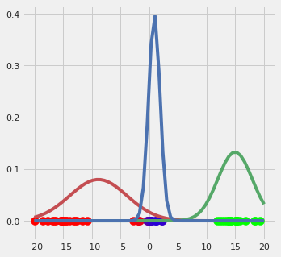

第一部分
1 | %matplotlib inline |
1 | from sklearn.datasets.samples_generator import make_blobs |
1 | from sklearn.cluster import KMeans |
1 | kmeans = KMeans(n_clusters=4, random_state=0) |
1 | rng = np.random.RandomState(13) |
使用GMM
1 | from sklearn.mixture import GaussianMixture |
1 | probs = gmm.predict_proba(X) |
[[0. 0.463 0. 0.537]
[0. 0. 1. 0. ]
[0. 0. 1. 0. ]
[0. 0. 0. 1. ]
[0. 0. 1. 0. ]]
1 | size = 50 * probs.max(1) ** 2 # square emphasizes differences |
mnist数据及生成
1 | from sklearn.mixture import GaussianMixture |
1 | from sklearn.datasets import load_digits |
(1797, 64)
1 | def plot_digits(data): |
1 | from sklearn.decomposition import PCA |
(1797, 41)
1 | n_components = np.arange(50, 210, 10) |
1 | gmm = GaussianMixture(110, covariance_type='full', random_state=0) |
True
1 | data_new = gmm.sample(100) |
2
1 | data_new = data_new[0] |
1 | digits_new = pca.inverse_transform(data_new) |
第二部分：使用python从头开始实现gmm
初始化
Decide how many sources/clusters (c) you want to fit to your data
Initialize the parameters mean$\mu_c$, covariance$\sigma_c$, and fraction_per_class $\pi_c$ per cluster c
E-step
- Calculate for each datapoint $xi$ the probability $r{ic}$ that datapoint $x_i$ belongs to cluster c with:
where $N(x|\mu,\Sigma)$describes the mulitvariate Gaussian with:
$r_{ic}$ gives us for each datapoint $x_i$ the measure of:
$\frac{\mathrm{probability\ that\ xi\ belongs\ to\ class\ c}}{\mathrm{probability\ of\ x_i\ over\ all\ classes}}$ ,hence if $x_i$ is very close to one gaussian c, it will get a high $r{ic}$ value for this gaussian and relatively low values otherwise.
M-step
for each cluster c: Calculate the total weight $mc$(loosely speaking the fraction of points allocated to cluster c) and update $\pi_c$,$\mu_c$and $\Sigma_c$ using $r{ic}$with:
注意：最好一个式子所使用的$\mu_c$是前面更新后的$\mu_c$。
Iteratively repeat the E and M step until the log-likelihood function of our model converges where the log likelihood is computed with:
E-Step
- Decide how many sources/clusters(c) you want to fit to your data —> Mind that each cluster c is represented by gaussian g
- Initialize the parameters mean $\mu_c$,covariance $\Sigma_c$,and fraction_per_class $\pi_c$ per cluster c
- calculate for each datapoint $xi$ the probability $r{ic}$ that datapoint $x_i$ belongs to cluster c with:
where $N(x|\mu,\Sigma)$describes the mulitvariate Gaussian with:
$r_{ic}$ gives us for each datapoint $x_i$ the measure of:
$\frac{\mathrm{probability\ that\ xi\ belongs\ to\ class\ c}}{\mathrm{probability\ of\ x_i\ over\ all\ classes}}$ ,hence if $x_i$ is very close to one gaussian c, it will get a high $r{ic}$ value for this gaussian and relatively low values otherwise.
1 | from matplotlib.axes._axes import _log as matplotlib_axes_logger |
1 | import numpy as np |
Dimensionality = (60, 3)
[[2.97644006e-02 9.70235407e-01 1.91912550e-07]
[3.85713024e-02 9.61426220e-01 2.47747304e-06]
[2.44002651e-02 9.75599713e-01 2.16252823e-08]
[1.86909096e-02 9.81309090e-01 8.07574590e-10]
[1.37640773e-02 9.86235923e-01 9.93606589e-12]
[1.58674083e-02 9.84132592e-01 8.42447356e-11]
[1.14191259e-02 9.88580874e-01 4.48947365e-13]
[1.34349421e-02 9.86565058e-01 6.78305927e-12]
[1.11995848e-02 9.88800415e-01 3.18533028e-13]
[8.57645259e-03 9.91423547e-01 1.74498648e-15]
[7.64696969e-03 9.92353030e-01 1.33051021e-16]
[7.10275112e-03 9.92897249e-01 2.22285146e-17]
[6.36154765e-03 9.93638452e-01 1.22221112e-18]
[4.82376290e-03 9.95176237e-01 1.55549544e-22]
[7.75866904e-03 9.92241331e-01 1.86665135e-16]
[7.52759691e-03 9.92472403e-01 9.17205413e-17]
[8.04550643e-03 9.91954494e-01 4.28205323e-16]
[3.51864573e-03 9.96481354e-01 9.60903037e-30]
[3.42631418e-03 9.96573686e-01 1.06921949e-30]
[3.14390460e-03 9.96856095e-01 3.91217273e-35]
[1.00000000e+00 2.67245688e-12 1.56443629e-57]
[1.00000000e+00 4.26082753e-11 9.73970426e-49]
[9.99999999e-01 1.40098281e-09 3.68939866e-38]
[1.00000000e+00 2.65579518e-10 4.05324196e-43]
[9.99999977e-01 2.25030673e-08 3.11711096e-30]
[9.99999997e-01 2.52018974e-09 1.91287930e-36]
[9.99999974e-01 2.59528826e-08 7.72534540e-30]
[9.99999996e-01 4.22823192e-09 5.97494463e-35]
[9.99999980e-01 1.98158593e-08 1.38414545e-30]
[9.99999966e-01 3.43722391e-08 4.57504394e-29]
[9.99999953e-01 4.74290492e-08 3.45975850e-28]
[9.99999876e-01 1.24093364e-07 1.31878573e-25]
[9.99999878e-01 1.21709730e-07 1.17161878e-25]
[9.99999735e-01 2.65048706e-07 1.28402556e-23]
[9.99999955e-01 4.53370639e-08 2.60841891e-28]
[9.99999067e-01 9.33220139e-07 2.02379180e-20]
[9.99998448e-01 1.55216175e-06 3.63693167e-19]
[9.99997285e-01 2.71542629e-06 8.18923788e-18]
[9.99955648e-01 4.43516655e-05 1.59283752e-11]
[9.99987200e-01 1.28004505e-05 3.20565446e-14]
[9.64689131e-01 9.53405294e-03 2.57768163e-02]
[9.77001731e-01 7.96383733e-03 1.50344317e-02]
[9.96373670e-01 2.97775078e-03 6.48579562e-04]
[3.43634425e-01 2.15201653e-02 6.34845409e-01]
[9.75390877e-01 8.19866977e-03 1.64104537e-02]
[9.37822997e-01 1.19363656e-02 5.02406373e-02]
[4.27396946e-01 2.18816340e-02 5.50721420e-01]
[3.28570544e-01 2.14190231e-02 6.50010433e-01]
[3.62198108e-01 2.16303800e-02 6.16171512e-01]
[2.99837196e-01 2.11991858e-02 6.78963618e-01]
[2.21768797e-01 2.04809383e-02 7.57750265e-01]
[1.76497129e-01 2.01127714e-02 8.03390100e-01]
[8.23252013e-02 2.50758227e-02 8.92598976e-01]
[2.11943183e-01 2.03894641e-02 7.67667353e-01]
[1.50351209e-01 2.00499057e-02 8.29598885e-01]
[1.54779991e-01 2.00449518e-02 8.25175057e-01]
[7.92109803e-02 5.93118654e-02 8.61477154e-01]
[9.71905134e-02 2.18698473e-02 8.80939639e-01]
[7.60625670e-02 4.95831879e-02 8.74354245e-01]
[8.53513721e-02 2.40396004e-02 8.90609028e-01]]
[1. 1. 1. 1. 1. 1. 1. 1. 1. 1. 1. 1. 1. 1. 1. 1. 1. 1. 1. 1. 1. 1. 1. 1.
1. 1. 1. 1. 1. 1. 1. 1. 1. 1. 1. 1. 1. 1. 1. 1. 1. 1. 1. 1. 1. 1. 1. 1.
1. 1. 1. 1. 1. 1. 1. 1. 1. 1. 1. 1.]
1 | """Plot the data""" |
M-step
如何利用E-step中得到的信息？
So why did this help us? Well, we now know the probability for each point to belong to each gaussian.
What can we do with this information? Well, with this information we can calculate a new mean as well as a new variance (in 1D) or covariance matrix in > 1D datasets. What will be the result of that? Well, this would change the location of each gaussian in the direction of the “real” mean and would re-shape each gaussian using a value for the variance which is closer to the “real” variance. This procedure is called the Maximization step of the EM algorithm. The Maximization step looks as follows:
for each cluster c: Calculate the total weight $mc$(loosely speaking the fraction of points allocated to cluster c) and update $\pi_c$,$\mu_c$and $\Sigma_c$ using $r{ic}$with:
注意：最好一个式子所使用的$\mu_c$是前面更新后的$\mu_c$。
so let’s look at out plot if we do the above updates,that is run the first EM iteration.
1 | """ |
1 | #可视化更新后的高斯分布 |

so as you can see the occurence of our gaussians changed dramatically after the first EM iteration.Let’s update r and illustrate the coloring of the points.
1 | """update r""" |
迭代10次EM过程
1 | import matplotlib.pyplot as plt |
1 | GM1D = GM1D(X_tot,10) |

multi dimensional case
1 | import matplotlib.pyplot as plt |
1 | #0. Create dataset |
1 | class GMM(object): |
1 | GMM = GMM(X,3,50) |
[0.8429320897452095, 0.15706464234352321, 3.2679112672282063e-06]